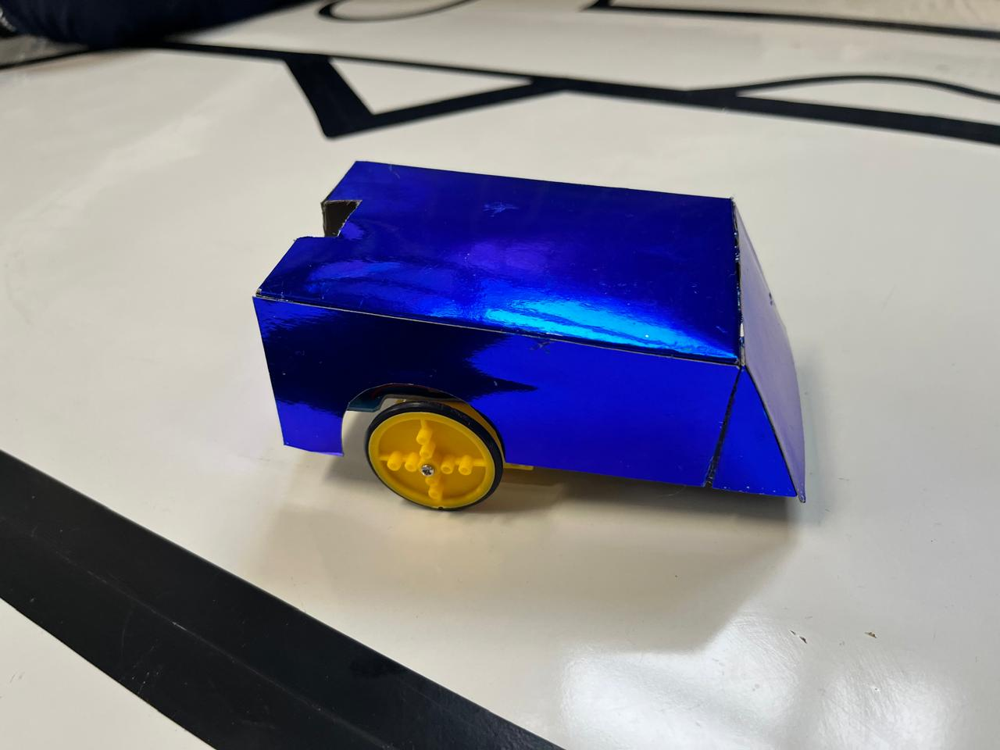
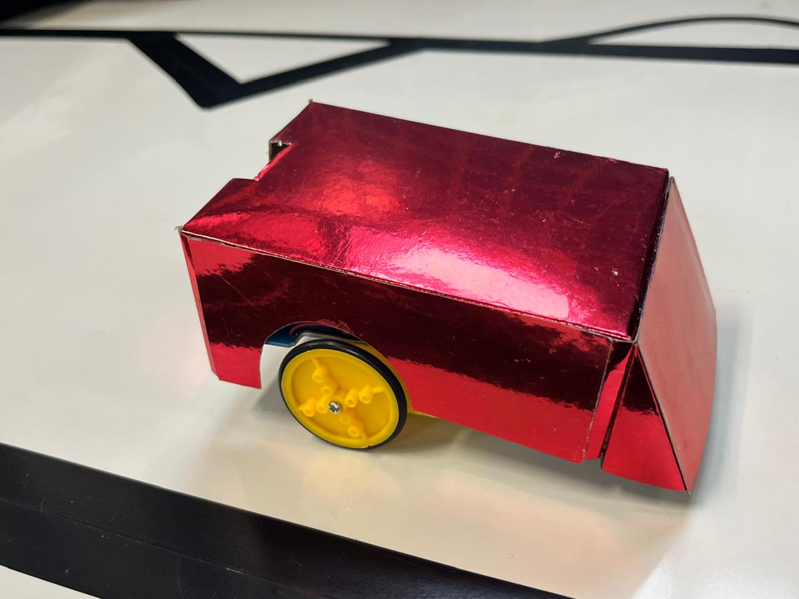

CONHEÇA OS ROBÔS
Nossos robôs
Dois robôs estão disponíveis para as equipes escolherem durante a competição.

ROBÔ 01
Robô Azul 🟦
Seguidor de linha clássico com estrutura azul. Utiliza 2 sensores na parte de baixo para ler a fita no chão e ajustar os motores automaticamente para não sair da pista.
Tipo
Segue-faixa
Sensores
2 sensores
Controle
Automático

ROBÔ 02
Robô Vermelho 🟥
Seguidor de linhas clássico com estrutura vermelha, este robô funciona de forma 100% automática. Os seus sensores detectam as curvas e aceleram ou travam as rodas para corrigir o trajeto.
Tipo
Segue-faixa
Sensores
2 sensores
Controle
Automático